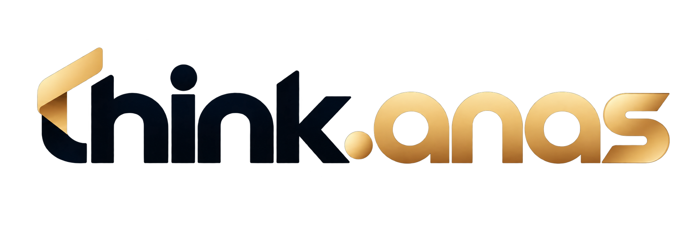
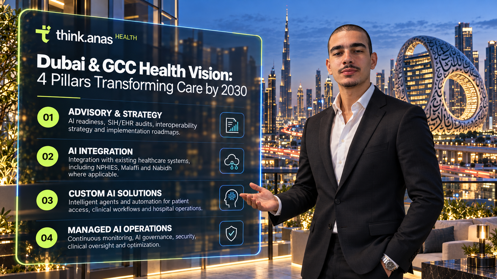

From fragmented platforms
to one operating picture.
Map people, data, decisions and constraints before choosing the technology.

HEALTHStrategy, integration and AI orchestration for healthcare institutions building the next operating model of care.

STAY HUMAN. THINK FURTHER.
01 THE CONNECTED HEALTH SYSTEM
ThinkAnas becomes the orchestration layer between operations, clinical data and human decisions — without replacing the systems that already work.
Map people, data, decisions and constraints before choosing the technology.
Agents work across existing systems with context, permissions and explicit approval points.
Local data boundaries, clinical validation and visible audit trails are part of the architecture.
02 INTELLIGENT HEALTH INFRASTRUCTURE
Translate executive ambition into a prioritised, governed and investable health AI roadmap.
Connect clinical and operational systems through standards that preserve meaning and trust.
Design specialised agents for high-friction clinical and administrative workflows.
Keep models, controls and workflows observable, secure and clinically accountable.
03 GCC TRUST ARCHITECTURE
Architecture begins with where data may live, who may act and how clinical authority remains visible.
Review your trust boundaries ↗PRINCIPAL HEALTH ARCHITECT / INDEPENDENT SYSTEMS INTEGRATOR
“Technology only matters when it makes care safer, work clearer and trust stronger.”
04 START WITH ONE MISSION
Frame the priority. We will turn it into a focused 90-day architecture and pilot conversation.